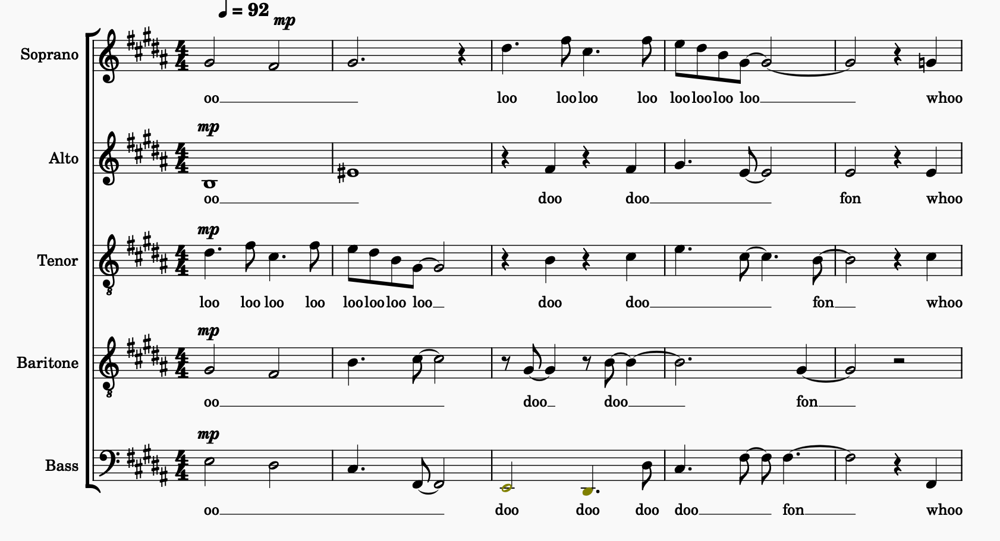

I took 15 passages from my own unpublished arrangements, changed one note in each, and asked seven AI models which bar the changed note is in. The best of them, GPT-6 Astra, found it two times in three. Most did a lot worse.
Each excerpt was asked twice, because the models often give a different answer when you ask again.

This is an example, not one of the 15 in the test. Every excerpt looks like this: part of a real score with one note changed. The models get the image and this question, and nothing else:
This is an image of part of a score. One note has been modified from the original. Which measure is it in? Answer with its bar number.
Bar 2.
The dot is each model's accuracy and the grey bar around it is a 95% confidence interval. Where two bars overlap a lot, the difference between those models could be luck. An excerpt answered right once and wrong once counts half. The squares are the 15 excerpts in order: green if both answers were right, gold if one was, hollow if neither was.
Laid out like a score, with a staff for each model and a bar for each excerpt. The top line is the bar where the note was changed; each cell shows the bar a model named on its first and second try.
| 001 | 002 | 003 | 004 | 005 | 006 | 007 | 008 | 009 | 010 | 011 | 012 | 013 | 014 | 015 | ||
|---|---|---|---|---|---|---|---|---|---|---|---|---|---|---|---|---|
| Answer | 29 | 77 | 58 | 3 | 7 | 8 | 36 | 43 | 46 | 22 | 27 | 83 | 19 | 39 | 63 | |
| OpenAI | Astra | 29/28 | 77/74 | 58/58 | 3/3 | 7/7 | 8/8 | 36/36 | 43/43 | 45/46 | 23/22 | 27/27 | 81/81 | 18/15 | 43/39 | 59/63 |
| Sol | 29/29 | 74/74 | 58/63 | 3/3 | 7/7 | 8/7 | 36/36 | 42/43 | 44/46 | 22/22 | 26/26 | 82/81 | 18/23 | 40/40 | 58/58 | |
| Luna | 28/29 | 74/74 | 58/58 | 3/4 | 8/8 | 8/7 | 36/35 | 44/45 | 44/44 | 23/23 | 26/27 | 81/82 | 10/10 | 40/42 | 58/58 | |
| Anthropic | Opus | 26/28 | 77/73 | 58/58 | 3/3 | 7/7 | 7/5 | 34/36 | 43/43 | 43/46 | 22/23 | 26/26 | 83/81 | 19/15 | 38/39 | 63/57 |
| Sonnet | –/28 | 74/73 | 58/62 | 2/3 | 7/7 | 6/8 | 36/36 | 42/42 | 44/44 | 23/23 | 27/26 | 82/82 | 19/11 | 40/41 | 58/63 | |
| Fable | 29/26 | 74/74 | 58/57 | 1/1 | 8/8 | 7/8 | 36/34 | 43/44 | 45/46 | 22/23 | 27/26 | 81/81 | 20/16 | 38/37 | 57/59 | |
| Haiku | 27/27 | 76/76 | 60/61 | 5/4 | 6/6 | 7/6 | 8/37 | 4/5 | 46/42 | 25/24 | 27/25 | 84/84 | 24/17 | 46/41 | 62/61 | |
| Found | 5 | 2 | 9 | 8 | 8 | 6 | 9 | 6 | 5 | 5 | 6 | 1 | 2 | 2 | 3 |
Each model got the excerpt image and this text, with no system prompt and no tools:
This is an image of part of a score. One note has been modified from the original. Which measure is it in? Answer with its bar number.
All models ran at their high reasoning setting. Each excerpt was asked twice, in separate requests.
GPT-6 Luna read each model's full response next to the right bar number, without the image, and replied correct or incorrect:
A model was shown part of a score in which one note had been modified, and asked which measure the modified note is in. Correct answer: measure N The model's response: <response> …the model's full response… </response> Is the model's answer correct? Reply with JSON: {"verdict": "correct"} or {"verdict": "incorrect"}.
Accuracy averages each excerpt's runs. The 95% range comes from resampling the excerpts. Cost is one pass over all 15 excerpts at list prices. "Found" counts the answers, out of 14, that named the right bar.
HarmonyBench, updated September 29, 2026. The test excerpts are unpublished, so they aren't shown here.